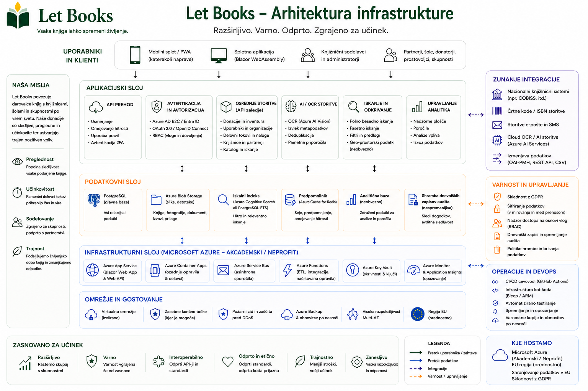

Primeri gostovanja in upravljanja na tej strani opisujejo predvideno smer arhitekture in pravil. Ne pomenijo certificiranih uvedb, institucionalne odgovornosti ali že delujočih okolij.
Vodič za skrbnike
Dostop, zasebnost in logistika morajo biti urejeni od prvega dne.
Let Books mora biti uporaben tako za zasebnega donatorja kot za nevladno organizacijo ali prihodnjega institucionalnega gostitelja. Skrbniki zato potrebujejo jasna pravila glede uporabnikov, tenantov, vlog, lokacij in neobvezne rabe AI.

Kaj upravljajo skrbniki
- Odobren dostop in članstva
- Tenante in vloge
- Lokacijsko strukturo in poteke donacij
- Zasebnost in pričakovanja glede revizije
- Neobvezne AI, OCR in prevajalske nastavitve
Čemu se je treba izogniti
- Dostopu, ki temelji samo na zunanji prijavi
- Javni objavi natančnih skladiščnih podatkov
- Obvezni uporabi plačljivih AI storitev v osnovnem poteku
- Pomešanju fizičnega izvoda z zgolj bibliografskim zapisom
Model dostopa
Prijava lahko pride od zunanjega ponudnika identitete, vendar mora avtorizacija ostati v domeni aplikacije. Sama prijava ne pomeni pravice do vpogleda v zasebne donatorske podatke.
Odobrene prijave
Zlasti v zgodnjih ali zasebnih postavitvah mora biti dostop omejen na vnaprej potrjene uporabnike.
Članstva v tenantih
En uporabnik lahko sodeluje v več tenantih in ima v vsakem drugo vlogo.
Vidnost po vlogah
Pregledovalci ne smejo samodejno videti zasebnih opomb ali natančnih podatkov o domu donatorja.
Ključni podatkovni pojmi
- Bibliografski zapis: podatki o delu ali izdaji
- Fizični izvod: konkretna knjiga s stanjem in lokacijo
- Hierarhija lokacij: soba, polica, škatla, omara, depo in podobno
- Donacijska serija: skupina izvodov, ki so ponujeni skupaj
AI mora ostati možnost
Skrbniki morajo moči OCR, prevajanje in ocenjevanje stanja po potrebi tudi izklopiti. Plačljive obogatitve morajo biti izrecne, sledljive in stroškovno nadzorovane.
Zasebnost in upravljanje
Let Books ni samo katalog. Če je sistem nepazljiv, lahko razkrije tudi postavitev zasebnega domačega skladišča. Pravila zasebnosti morajo to upoštevati.
Privzeto zasebno
Natančne lokacije, zasebne opombe in kontaktni podatki donatorjev morajo ostati omejeni.
Revizija občutljivih dejanj
Izvozi, uvozi, spremembe vlog in prihodnje AI zahteve morajo biti evidentirani.
Premik ni enak statusu
Knjiga, premaknjena v donacijsko škatlo, še ni avtomatsko predana. Fizični premik in procesni status naj ostaneta ločena.
Smer postavitve sistema
Platforma mora služiti eni zasebni postavitvi in hkrati omogočati poznejši prehod na gostovanje pri knjižnici, univerzi ali drugi instituciji. Arhitektura mora ostati odprta za samostojno ali institucionalno gostovanje.
Operativni kontrolni seznam
- Odobrite začetne uporabnike
- Nastavite podprte jezike
- Definirajte lokacije
- Preverite izvoz in uvoz na resničnih vzorcih
- Preglejte meje zasebnosti pred objavo širše ponudbe
Primer gostovanja: Nevladna organizacija uporablja Let Books za več lokalnih donatorjev in partnerskih knjižnic. En skrbnik upravlja odobren dostop, vsak donator ima svoj tenant, pregledovalci vidijo samo z njimi deljene serije, OCR pa ostane izklopljen, dokler zanj ni pravega proračuna.